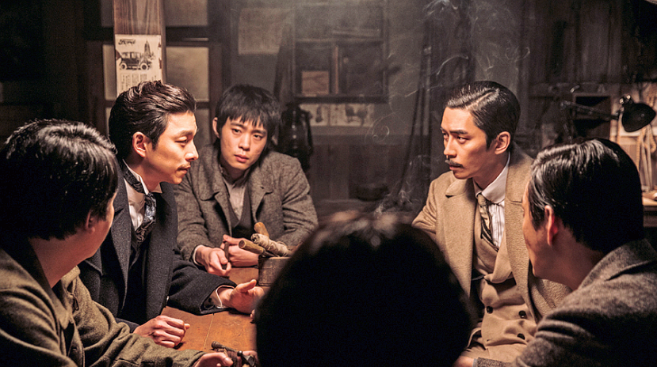
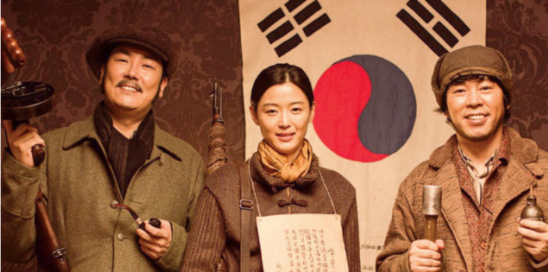
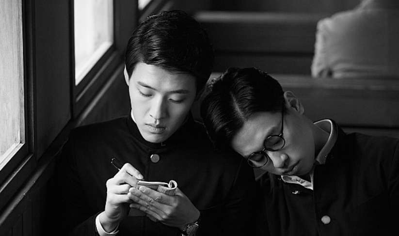
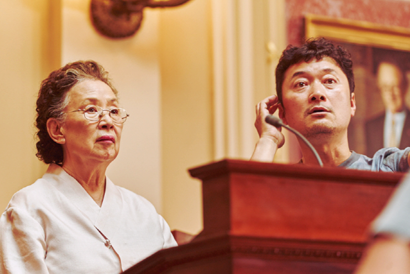
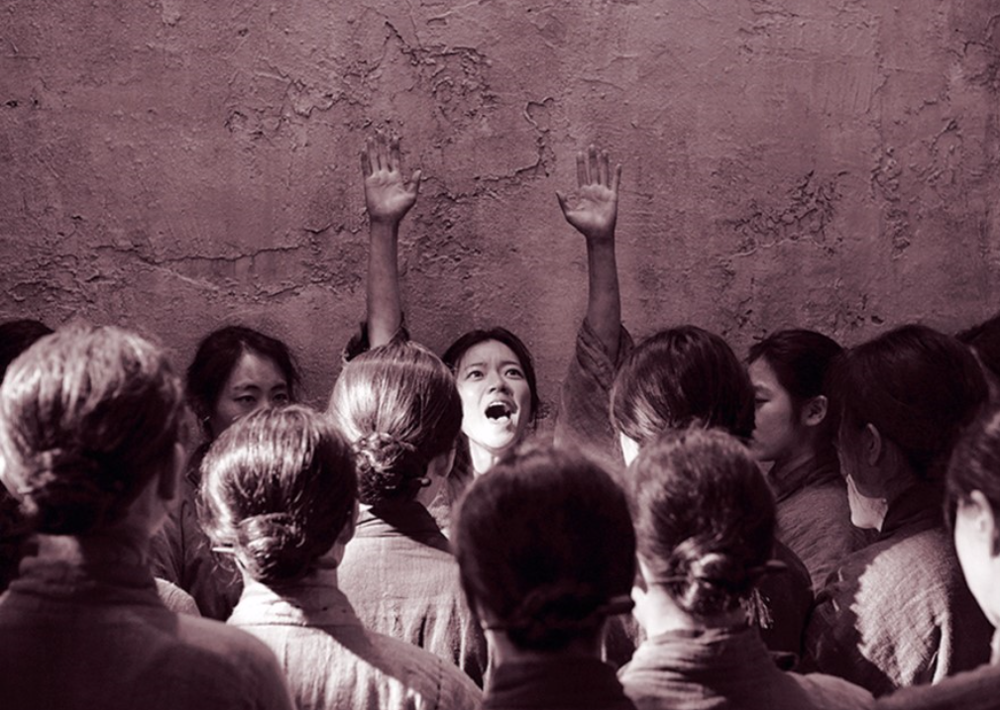

정의
내용
1949년 10월 1일 제정된「국경일에 관한 법률」에 의거, 광복절이 국경일로 제정되었다. 이 날은 경축행사를 전국적으로 거행하는데 중앙경축식은 서울에서, 지방경축행사는 각 시·도 단위별로 거행한다.
이 날의 의의를 고양하고자 전국의 모든 가정은 국기를 게양하여 경축하며, 정부는 이 날 저녁에 각계각층의 인사와 외교사절을 초청하여 경축연회를 베푼다.
광복회원을 위한 우대조치의 하나로, 광복회원 및 동반가족에 대하여 전국의 철도·시내버스 및 수도권전철의 무임승차와 고궁 및 공원에 무료입장할 수 있도록 하고 있다.
광복절 추천 영화
1. 밀정(The Age of Shadows, 2016)
1920년대 일제강점기. 조선인 출신 일본경찰 이정출(송강호)은 무장독립운동 단체 의열단의 뒤를 캐라는 특명으로 의열단의 리더 김우진(공유)에게 접근하고, 한 시대의 양 극단에 서 있는 두 사람은 서로의 정체와 의도를 알면서도 속내를 감춘 채 가까워진다. ‘밀정’이란 단어는 남의 사정을 은밀히 정탐하여 알아내는 자를 뜻한다. 서구적 개념인 스파이, 첩자 등의 단어가 생기기 전인 일제강점기 당시 일제 경찰은 독립운동 세력의 내부에 끊임없이 밀정을 심었고, 항일 인사들 사이에서도 변절자가 나오는 등, 이념과 체제의 대립인 냉전시대가 드리운 것보다 더 짙은 그늘이 나라를 잃은 같은 민족 사이에 자리하고 있었다. 그리고 항일과 친일 사이, 경계선에 선 인물들은 누가 적이고 동지인지 알 수 없는 모호함 속에서 서로를 의심하고 교란했다. 의열단은 일제의 주요 시설을 파괴할 폭탄을 경성으로 들여오기 위해, 그리고 일본 경찰은 그들을 쫓아 모두 상해에 모인다.
2. 암살(Assassination, 2015)
1933년 조국이 사라진 시대. 대한민국 임시정부는 일본 측에 노출되지 않은 세 명을 암살작전에 지목한다. 한국 독립군 저격수 안옥윤, 신흥무관학교 출신 속사포, 폭탄 전문가 황덕삼! 김구의 두터운 신임을 받는 임시정부 경무국 대장 염석진은 이들을 찾아 나서기 시작한다. 암살단의 타깃은 조선주둔군 사령관 카와구치 마모루와 친일파 강인국. 한편, 누군가에게 거액의 의뢰를 받은 청부살인업자 하와이 피스톨이 암살단의 뒤를 쫓는데...친일파 암살작전을 둘러싼 이들의 예측할 수 없는 운명이 펼쳐진다!
3. 동주(DongJu:The Portrait of A Poet, 2015)
이름도, 언어도, 꿈도, 모든 것이 허락되지 않았던 일제강점기.한 집에서 태어나고 자란 동갑내기 사촌지간 동주와 몽규.시인을 꿈꾸는 청년 동주에게 신념을 위해 거침없이 행동하는 청년 몽규는 가장 가까운 벗이면서도, 넘기 힘든 산처럼 느껴진다. 창씨개명을 강요하는 혼란스러운 나라를 떠나 일본 유학 길에 오른 두 사람. 일본으로 건너간 뒤 몽규는 더욱 독립 운동에 매진하게 되고, 절망적인 순간에도 시를 쓰며 시대의 비극을 아파하던 동주와의 갈등은 점점 깊어진다. 어둠의 시대, 평생을 함께 한 친구이자 영원한 라이벌이었던 윤동주와 송몽규의 끝나지 않은 이야기가 지금 시작된다.
4. 아이 캔 스피크(I Can Speak, 2017)
꼭…하고 싶은 말이 있고, 듣고 싶은 말이 있다! 온 동네를 휘저으며 무려 8천 건에 달하는 민원을 넣어 도깨비 할매라고 불리는 ‘옥분’. 20여 년간 누구도 막을 수 없었던 그녀 앞에 원칙주의 9급 공무원 ‘민재’가 나타나면서 팽팽한 긴장감이 흐른다. 민원 접수만큼이나 열심히 공부하던 영어가 좀처럼 늘지 않아 의기소침한 ‘옥분’은 원어민 수준의 영어를 구사하는 ‘민재’를 본 후 선생님이 되어 달라며 시간과 장소를 불문하고 부탁하기에 이른다. 둘만의 특별한 거래를 통해 결코 어울리지 않을 것 같았던 두 사람의 영어 수업이 시작되고, 함께하는 시간이 계속 될수록 서로를 이해하고 소통하게 되면서 친구이자 가족이 되어 간다. ‘옥분’이 영어 공부에 매달리는 이유가 내내 궁금하던 ‘민재’는 어느 날, 그녀가 영어로 꼭 하고 싶은 말이 있다는 것을 알게 되는데…
5. 항거:유관순 이야기(A Resistance, 2019)
1919년 3.1 만세운동 후 세평도 안 되는 서대문 감옥 8호실 속,영혼만은 누구보다 자유로웠던 유관순과 8호실 여성들의 1년의 이야기. 1919년 3월 1일 서울 종로에서 시작된 만세운동 이후, 고향 충청남도 병천에서 ‘아우내 장터 만세운동’을 주도한 유관순이 서대문 감옥에 갇힌 후 1년여의 이야기를 담았다. 어느 날 서대문형무소역사관에 방문한 조민호 감독은 유관순의 사진을 접하게 되었고, 슬프지만 당당함을 담고 있는 눈빛에 뜨거운 울림을 느낀 것이 이 영화의 시작이다. 어두운 시대적 상황 속에서도 자유와 해방을 향한 꿈을 굽히지 않았던 유관순의 삶을 고스란히 담아내고 싶었던 조민호 감독과 제작진은 역사적 사실과 자문 등을 통해 사실에 입각한 실제적 인물 유관순을 정직하게 스크린에 담아내려고 노력했다. 또한 독립운동가이기 전, 열일곱 소녀였던 유관순의 감정과 심리 변화, 그리고 서대문 감옥 ‘8호실 여성들’과 연대하는 유관순의 모습을 담아내어 우리가 몰랐던 유관순의 이야기를 대중들에게 알리다.
사진 출처 : https://blog.naver.com/sober_555/221615041738